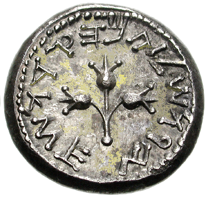
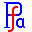

Ancient Semitic Scripts

The Ancient Semitic Scripts area was created by late Yoram Gnat (יורם גנת). Presently it is not maintained.
This page contains a
collection of fonts related to the history of the Hebrew
writing. Starting with the Proto-Canaanite
continuing with Phoenician/Canaanite,
Paleo-Hebrew, Aramaic, early Hebrew
Square Script - all the way to the modern Hebrew letter
forms. Wherever possible, pictures of the documents used for
font creation are included.
Latest Release: 0.06-1 21-Mar-2010 ( Download
or view sample
)
Release Notes:
Changes:
- ProtoCanaanite, Phoenician, all Paleo-Hebrew and
Aramaic-Early-Br-Rkb fonts now have the glyphs assigned to both
the Hebrew Unicode range (0590-05FF) and the Phoenician
code range (10900-1091F)
- Aramaic-VIIBCE and Aramaic-Imperial-Yeb fonts now have the glyphs
assigned to both the Hebrew Unicode range (0590-05FF) and the Aramaic
Imperial Unicode range (10840-1085F)
- The Hebrew-Samaritan font now has the glyphs assigned to both the
Hebrew Unicode range (0590-05FF) and the Samaritan code range
(0800-083F)
- Font "Makabi-YG" added. This is a "modernized" version of the "Hebrew Square Isaiah" font
- Oblique, Bold and Bold-Oblique weights added to "Keter YG" font
- The algorithms of vowel and cantillation marks positioning in the
fonts "Keter Aram Tsova" and "Keter YG" were rewritten and should
now correctly position the marks.
- Corrections to "Hebrew Sofer Stam Ashkenaz" font
- All the fonts in the binary tarballs are in open type .ttf format. The
source tarball includes FontForge source font database files of the
fonts.
- The "About the fonts" PDF
documents are Hebrew only. Hopefully this will change in the future.
About the fonts
- View Documentation
(Hebrew only for now)
.
Specifications and standards:
Unicode Hebrew(0590-05FF)
Unicode Phoenician(10900-1091F)
Unicode Imperial Aramaic(10840-1085F)
Unicode Samaritan(0800-083F)
Unicode Alphabetic Presentation Forms (FB00-FB4F)
Unicode Basic Latin (0020-007F)
Unicode Currency (20A0-20CF)
Microsoft Hebrew OpenType Recommendations
Mailing Lists:
The ancient scripts subproject will use the Culmus project
mailing list
Acknowledgements:
I'd like to thank:
- George Williams for his 
FontForge
, the ultimate tool for font design.
- Maxim Yorsh who was kind enough to host
this pages in the Culmus project
- Israel Gidali from IBM Israel.
His innocent question about existance of proper Paleo-Hebrew font
trigered my interst.
- Ada Yardeni for her "Book of Hebrew
Script" which was a further stimulus
for my hobby.
License
The entire package of fonts is distributed under the terms of GNU
General
Public License version 2. The fonts contain parts created
by
various entities, see the LICENSE file inside the tarball or among the
accompanying documentation files.
Many fonts in the package include numeric and punctuation glyphs from the culmus project YehudaCLM font family. Yehuda font family is copyright 2004 by Maxim Iorsh
(iorsh@math.technion.ac.il) and Distributed under the terms of GNU
General Public License version 2
(http://www.gnu.org/licenses/gpl.html). All rights reserved.
The Keter-Aram-Tsova and Keter-YG fonts implement partialy the Hebrew
OpenType Layout logic copyright (c) 2003 & 2007, Ralph Hancock
& John Hudson. This layout logic for Biblical Hebrew is open source
software under the MIT License; for details contact copyright
holders at <license@tiro.com>.
As a special exception, if you create a document which use this fonts,
and embed this fonts or unaltered portions of this fonts into the
document, this fonts do not by themself cause the resulting document to
be covered by the GNU General Public License. This exception does not
however invalidate any other reasons why the document might be
covered by the GNU General Public License. If you modify this fonts,
you may extend this exception to your version of the fonts, but you are
not obligated to do so. If you do not wish to do so, delete this
exception statement from your version.